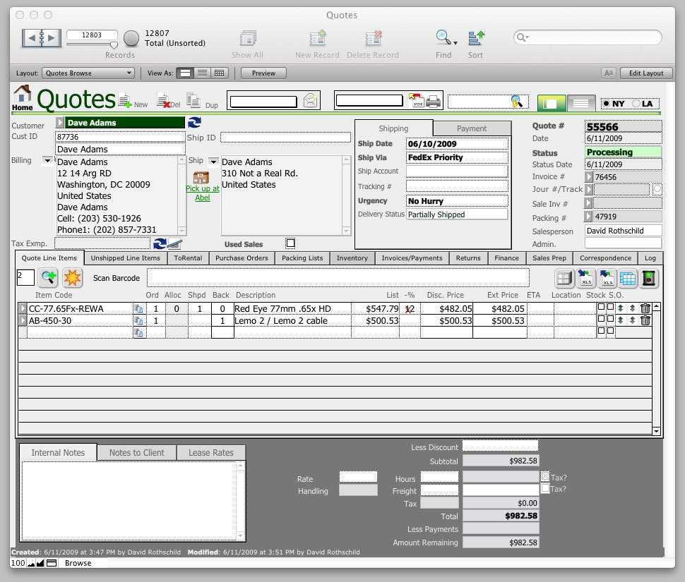

Projects
Abel Cine Sales System
FileMaker Sales, Quotation, Invoicing, Service, Inventory Management system. Designed for New York camera reseller Abel Cine. Supported 30 users across the company. (2007)

Filemaker GTD
Personal Project Management/Task List/Calendar Software. Based on Dave Allen's Getting Things Done System. (2005)